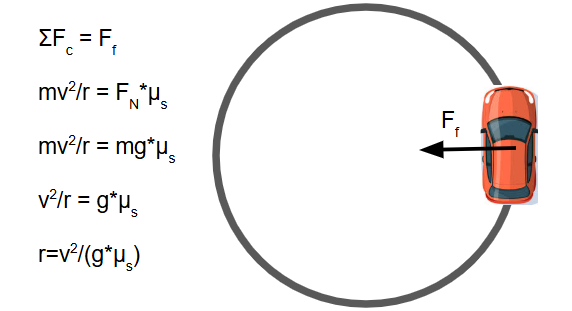
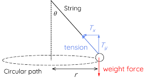

Circular motion occurs when an object moves along a circular path with a constant speed. Even if the speed is constant, the object is accelerating due to the continuous change in direction of velocity. This acceleration is called centripetal acceleration.
| Quantity | Symbol | Unit |
|---|---|---|
| Velocity | v | m/s |
| Radius | r | m |
| Mass | m | kg |
| Acceleration | ac | m/s² |
| Force | Fc | N |
Question: A 2 kg object moves in a circle of radius 4 m at a speed of 6 m/s. What is the centripetal force acting on it?
Solution:
Use Fc = mv² / r:
Fc = (2)(6²)/4 = 72/4 = 18 N
Question: A car is driving on a circular race track and is driving at a velocity of 30 m/s. If the coefficient of static friction is 0.7, what is the minimum radius the circular track can have?
Solution:
R = 30²/(9.8*0.7) = 131.2 m
Question: A ball is attached to a string that is at an angle of θ degrees. If the ball weighs 10 kg and the radius of the circle that its traveling on is 4m at a velocity of 5m/s, find the force of tension in the string and the angle.
Solution:
1. Ty = Tcosθ=mg = 10*9.8 = 98 [N]
2. Tx = Tsinθ = mv² / r = 10*5² / 4 = 62.5 [N]
3. √(Tx² + Ty²) = T
4. T = √(98)²+(62.5)² = 116.23
5. θ = tan-1(Tx/Ty) = 32.5 degrees
When a car turns on a flat road, the frictional force between the tires and the road provides the necessary centripetal force to keep the car moving in a circle. However, if the road is banked (tilted at an angle), the situation becomes more interesting.
On a banked curve, the normal force — which is perpendicular to the surface of the road — has a component that can help supply the centripetal force needed for circular motion. This reduces the reliance on friction alone.
If the banking angle is ideal for a certain speed, a car can round the curve with no friction at all, relying solely on the horizontal component of the normal force to provide the necessary centripetal force.